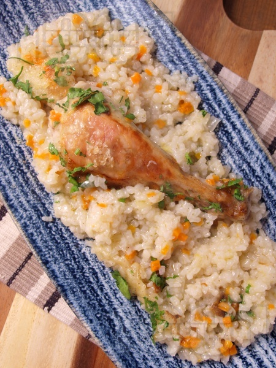

Im Ofen gebackene Hähnchenschenkel mit weißem
Reis und Petersilie
Für 6 Portionen:
- 6 Hähnchenschenkel
- 1 Tasse Reis
- 3 Tasse Wasser
- 1 Zwiebel
- 2 Zweige Petersilie
- Pfeffer
- Salz
- 2 Esslöffel Öl
Zubereitungsart:
Hähnchenschenkel (6 Stück) werden gewaschen und in Salzwasser gekocht, bis sie fertig sind. Die Brühe wird vor dem Kochen gerettet.
In einer Pfanne die fein gehackte Zwiebel (1 Kopf) dünsten, bis sie weich ist. Sobald es weich ist, den gewaschenen Reis (1 Teelöffel) hinzufügen. Es wird gebraten, bis der Reis transparent wird. Anschließend mit Salz und Pfeffer würzen. Umrühren und nach 3-4 Minuten vom Herd nehmen.
Der Reis wird gleichmäßig in einer Pfanne verteilt und die gekochten Hähnchenschenkel darauf angeordnet. Das Gericht wird mit Hühnerbrühe übergossen, wobei das Wasser-Reis-Verhältnis von 3:1 einzuhalten ist. Das Gericht wird bei einer Temperatur von 180 Grad gebacken, bis der Reis die Flüssigkeit aufnimmt.
Hähnchenschenkel mit Reis werden heiß serviert und mit frischer Petersilie bestreut.
Zubereitungszeit: 60 Minuten

Kalorien und Nährwert
Portion 239 g
Kalorien 213 Kalorien
Kohlenhydrate 26 g 50%
Fette 5 g 22%
Proteine 15 g 29%
Cholesterin 48 mg
★
★
★
★
★
0 / 5